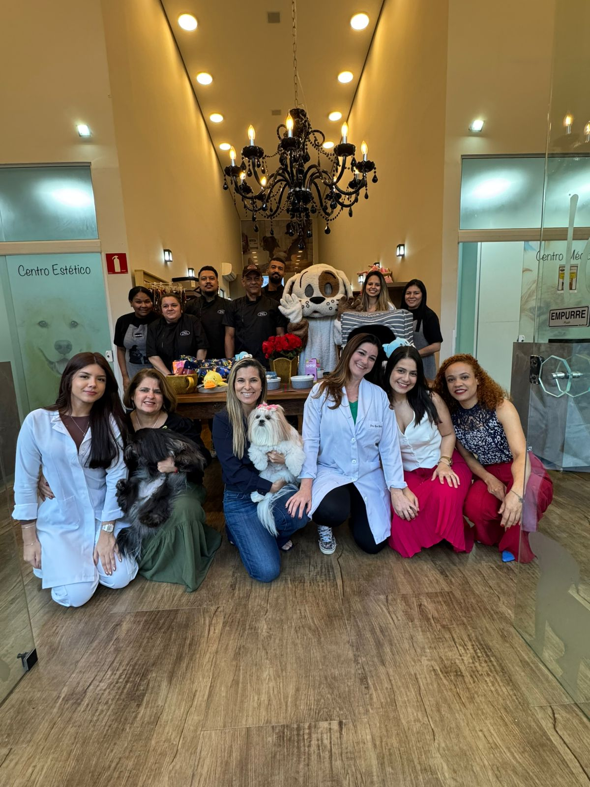
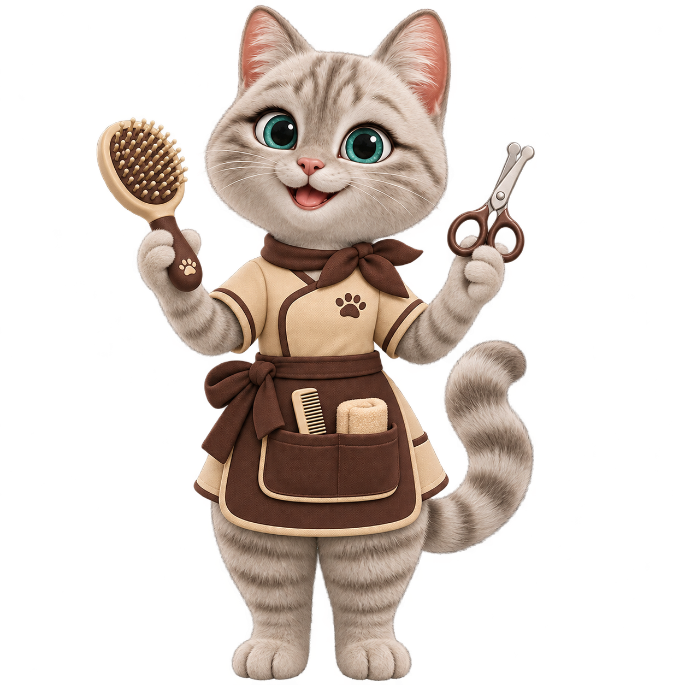
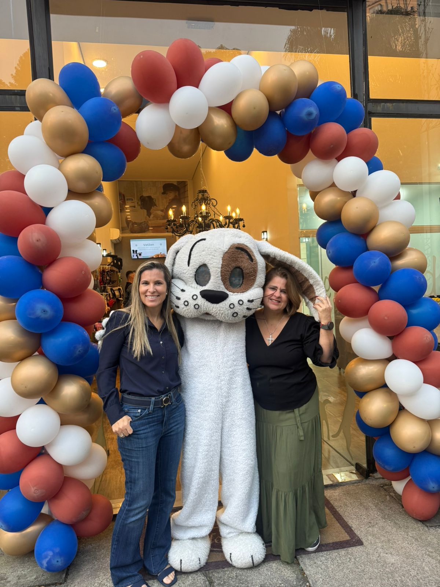
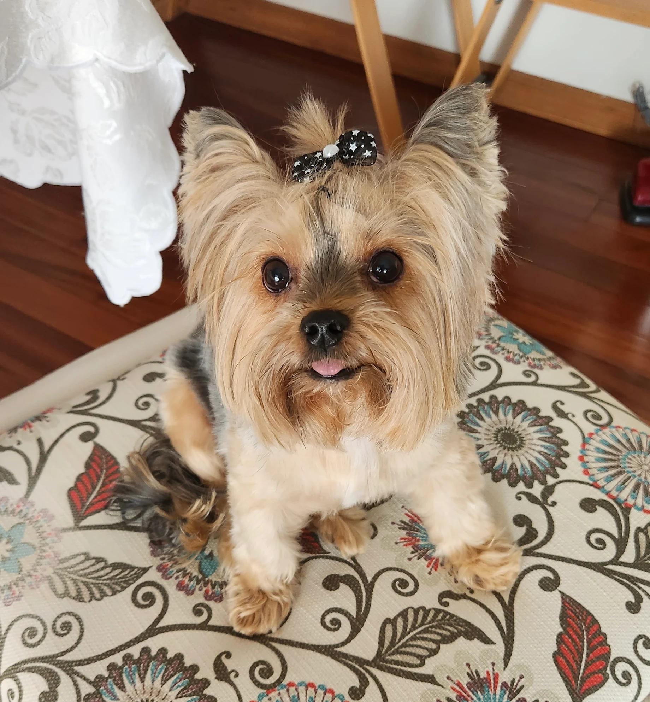
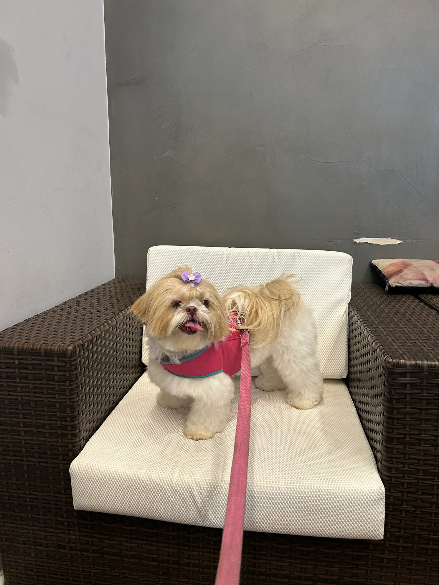

CARINHO QUE RENOVA
Banho &
bem-estar
Um banho de cuidado.
E uma boa dose de carinho.
Seu pet faz parte da sua família. E tem um lugar especial na nossa história. No Morumbi e no Jardim Marajoara, reunimos banho e tosa, clínica veterinária e loja para cuidar dele em cada detalhe.
Conheça nossos cuidados +Gente que cuida de quem você ama.

Aqui, ele é da família.A gente cuida do seu pet com o mesmo amor que você sente por ele.
O Empório dos Bichos nasceu da paixão pelos animais. Há 25 anos, esse carinho está em cada atendimento, em cada banho e em cada detalhe.
Com unidades no Morumbi e no Jardim Marajoara, reunimos estética, saúde e uma loja especializada para cuidar de cães e gatos por inteiro.
Do focinho à pontinha do rabo.
Um banho de cuidado.
E uma boa dose de carinho.
O jeitinho dele.
Ainda mais bonito.

Cuidado em cada
fase da vida.
Mais conforto para
viver bons momentos.
Pequenos mimos.
Grandes alegrias.
O cuidado do Empório
pelos olhos de quem vive essa experiência.
Espaços reservados para receber fotos e depoimentos reais dos nossos clientes.
Este espaço está pronto para receber a foto e o relato de um cliente.
Unidade Morumbi
Este espaço está pronto para receber a foto e o relato de um cliente.
Unidade Sócrates · Jardim Marajoara
Este espaço está pronto para receber a foto e o relato de um cliente.
Unidade Morumbi
Este espaço está pronto para receber a foto e o relato de um cliente.
Unidade Sócrates · Jardim Marajoara
Este espaço está pronto para receber a foto e o relato de um cliente.
Unidade Morumbi
Este espaço está pronto para receber a foto e o relato de um cliente.
Unidade Sócrates · Jardim Marajoara
Porque o seu melhor amigo merece
mais do que cuidado. Merece se sentir em casa.

25 anos de históriaUma história de amor e dedicação aos pets, construída em cada atendimento.
Descubra esse cuidado +
+33 mil pets atendidosCada patinha tem sua história. E cada pet recebe a atenção que merece.
Descubra esse cuidado +Uma equipe qualificada e apaixonada por fazer seu melhor amigo se sentir em casa.
Descubra esse cuidado +
Saúde, beleza e bem-estarEstética, clínica e loja especializada. Tudo para cuidar de quem faz parte da família.
Descubra esse cuidado +Segunda a sábado8h às 18h
Telefone(11) 3507-7434Segunda a sábado8h às 18h
Telefone(11) 5686-4393Seu pet escolhe o carinho. Você escolhe o caminho.
A gente ajuda você a encontrar o cuidado ideal para o seu melhor amigo.
Escolha a unidade Morumbi ou Sócrates, no Jardim Marajoara, e fale com a equipe pelo WhatsApp. Informe o cuidado que procura e combine o dia e o horário disponíveis. O agendamento é confirmado pela equipe durante a conversa.
Sim. O Empório reúne cuidados de estética, saúde e produtos para cães e gatos. Conte à equipe a espécie, a idade e as necessidades do seu pet para receber orientação sobre o atendimento.
Fale com a unidade escolhida e informe o porte do pet, o tipo de pelagem e o cuidado desejado. A equipe confirma o valor e os detalhes antes de você combinar o atendimento.
Na conversa de agendamento, compartilhe o nome, a espécie e a idade do seu pet e avise sobre necessidades específicas de saúde ou comportamento. A equipe orienta sobre os documentos e os cuidados necessários para a visita.
Escolha a mais conveniente para você: Morumbi, na Rua Correggio, 25D, ou Sócrates, na Rua Sócrates, 450, no Jardim Marajoara. Para clínica, fisioterapia ou outro cuidado específico, confirme a disponibilidade com a equipe da unidade.
Ver endereços e contatosAs duas unidades informam atendimento de segunda a sábado, das 8h às 18h. Para feriados e horários de serviços específicos, confirme diretamente com a equipe.